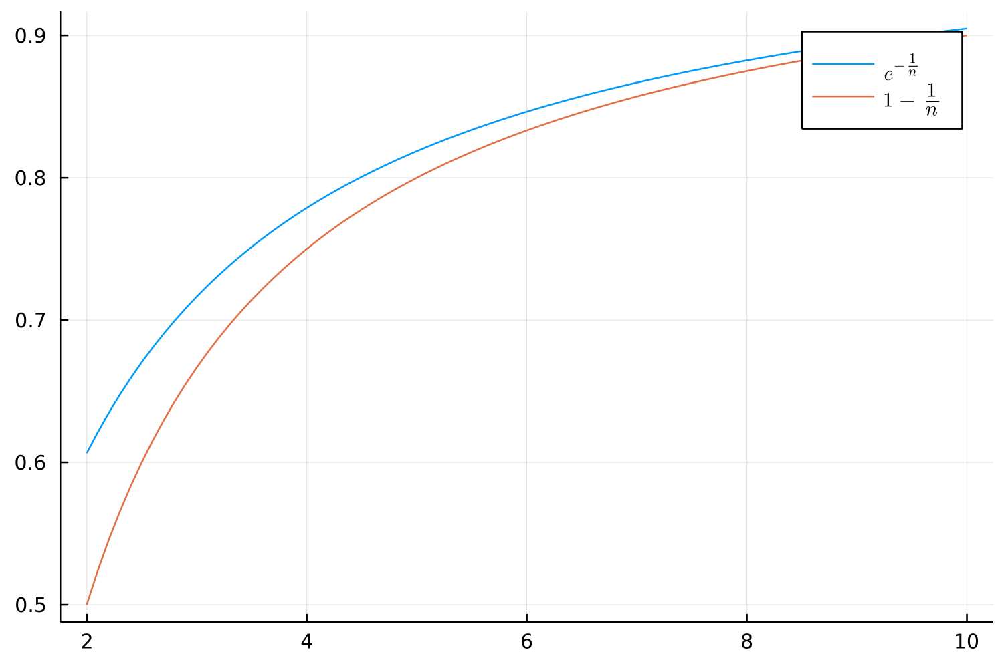
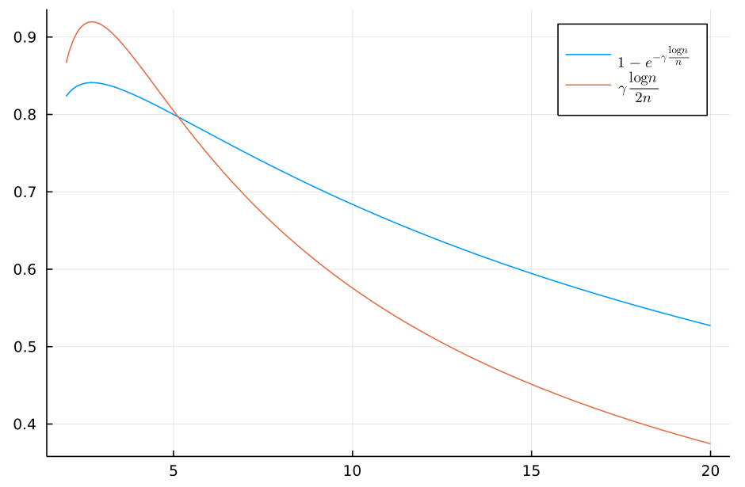

ADRC - Lesson 13
Indice
Opportunistics Networks - The Gossip Models
In questa sezione vedremo una famiglia di protocolli distribuiti noti come modelli Gossip.
Tali modelli lavorano in un contesto totalmente sincronizzato, ovvero dove le comunicazioni sono scandite da un clock globale.
Il ritmo del clock globale è discreto, ed faremo riferimento alle singole unità temporali col termine time slot.
Infine assumiamo che le reti distribuite sulle quali eseguire questi protocolli sono grafi non diretti.
In particolare vedremo due tipologie di protocolli del tutto equivalenti, noti col nome di protocolli PUSH e PULL.
Protocollo PUSH
Ad ogni time slot \(t = 0, 1, ...\) ogni nodo \(u\) sceglie u.a.r.1 un suo vicino \(v \in_U N(u)\) e se necessario gli trasmette un messaggio M.
Entro il termine del time slot \(t\) il nodo \(v\) riceverà il messagio M.
Protocollo PULL
In maniera del tutto analoga al protocollo PUSH possiamo definire la variante PULL nel seguente modo:
ad ogni time slot \(t = 0, 1, ...\) ogni nodo \(u\) sceglie u.a.r.1 un suo vicino \(v \in_U N(u)\), e se \(v\) ha un'informazione che \(u\) desidera allora \(u\) si farà trasmettere un messaggio M contenente tale informazione.
Entro il termine del time slot \(t\) il nodo \(v\) riceverà il messagio M.
Proprietà
Osserviamo che ad ogni istante \(t\) tutte le operazioni di push o pull generano un grafo diretto delle comunicazioni \(G_t = (V, E_t)\).
Considerando il protocollo PUSH, esiste un arco diretto \((u,v) \in E_t\) se \(u\) fa un operazione di push su \(v\).
Analogamente per il protocollo PULL, esiste un arco diretto \((v,u) \in E_t\) se \(u\) fa un operazione di pull su \(v\).
Osservare che il grafo \(G_t\) risulta sparso, ovvero con \(n\) archi, perché ci sarà un arco per ogni operazione di push o pull fatta dai nodi.
Perciò possiamo vedere l'uso di protocolli di tipo PUSH o PULL come una sequenza di grafi diretti di comunicazione \(\lbrace G_t = (V,E_t) \rbrace_{t \geq 0}\).
Broadcast on Clique with PULL Protocol
Consideriamo il solito problema del broadcasting a singola sorgente \(s\) su una clique \(K_n\).
Definiamo dei protocolli probabilistici di tipo PULL che risolvono il task del broadcasting.
Trivial Protocol
Un protocollo banale è il seguente:
- ogni nodo, eccetto la sorgente \(s\), inizia il protocollo nello stato
NOT-INFORMED. - ad ogni tempo \(t = 0, 1, ...\) ogni nodo \(v \neq s\) nello stato
NOT-INFORMEDfa una operazione di pull su un altro nodo \(u\) uniformemente a caso.- se \(u \equiv s\) allora \(v\) si fa inviare una copia del messaggio
Med entra nello statoINFORMED.
- se \(u \equiv s\) allora \(v\) si fa inviare una copia del messaggio
- il protocollo termina globalmente quando tutti i nodi avranno ricevuto una copia del messaggio
M.
Analiziamo ora l'efficienza di tale protocollo.
Ciò che vogliamo sapere è in media quanto tempo ci mette un nodo \(u\) a fare pull sulla sorgente \(s\). Sia la variabile aleatoria \(X^{(time)}_u\) che indica entro quanto tempo \(u\) diventa informato. Abbiamo che tale v.a. è una variabile geometrica di parametro \(p = \frac{1}{n-1}\), ovvero
\begin{align*} \mathcal{P}(X^{(time)}_u = 1) &= \mathcal{P}(u \mbox{ pulls } s) = \frac{1}{n-1}\\ \mathcal{P}(X^{(time)}_u = 2) &= (1 - \mathcal{P}(u \mbox{ pulls } s)) \cdot \mathcal{P}(u \mbox{ pulls } s) = \left(1 - \frac{1}{n-1}\right)\frac{1}{n-1}\\ \mathcal{P}(X^{(time)}_u = 3) &= (1 - \mathcal{P}(u \mbox{ pulls } s))^2 \cdot \mathcal{P}(u \mbox{ pulls } s) = \left(1 - \frac{1}{n-1}\right)^2\frac{1}{n-1}\\ &\vdots\\ \mathcal{P}(X^{(time)}_u = k) &= \left(1 - \frac{1}{n-1}\right)^{k-1}\frac{1}{n-1}\\ \end{align*}
con media
\[
\mathbb{E}\left[ X^{(time)}_u \right] = \frac{1}{p} = n - 1
\]
perciò in media dopo \(n-1\) time slot tutti i nodi verranno informati.
Better Protocol
Un protocollo migliore del precedente è il seguente:
- inizialmente la sorgente \(s\) è nello stato
INFORMED, mentre il resto dei nodi parte dallo statoNOT-INFORMED. - ad ogni tempo \(t = 0, 1, ...\) ogni nodo \(v\)
NOT-INFORMEDfa una operazione di pull su un altro nodo \(u\) uniformemente a caso.- se \(u\) è un nodo
INFORMED, allora \(v\) si fa inviare una copia del messaggioMed entra nello statoINFORMED.
- se \(u\) è un nodo
- il protocollo termina globalmente quando tutti i nodi entrano nello stato
INFORMED.
Analiziamo ora l'efficienza di tale protocollo, e perché è migliore del precedente, tramite il seguente teorema.
Riferiamoci a tale protocollo con al sigla BPP (broadcast pull protocoll).
THM
il protocollo BPP termina il suo task sull'istanza \((K_n, s \in \left[ n \right])\) in tempo \(\Theta(\log{n})\) w.h.p.
Proof
Fissiamo un time slot \(t \geq 0\), e definiamo l'insieme
\begin{align*} I_0 &\equiv \lbrace s \rbrace\\ I_t &\equiv \lbrace v \in V \vert v \mbox{ is informed at time } t \rbrace \end{align*}La dimostrazione di suddividerà in due fasi:
- Fase 1 in cui si dimostrerà che w.h.p. il numero di nodi
INFORMED\(\vert I_t \vert\) cresce in maniera esponenziale fino a \(\frac{n}{2}\). - Fase 2 in cui si dimostrerà che w.h.p. il numero di nodi restanti
NOT-INFORMEDdecresce in maniera esponenziale.
Così facendo verrà dimostrato che in tempo logaritmico il protocollo terminerà il suo task w.h.p.
- Fase 1
Sia \(t_{max} = \max{\lbrace t \geq 0 \vert m_t \leq \frac{n}{2} \rbrace}\). Fissato un tempo \(0 \leq t \leq t_{max}\), definiamo la v.a. binaria \(Y_u\) che indica la probabilità che un nodo
NOT-INFORMEDdiventaINFORMEDal tempo \(t+1\). \[ Y_v = \begin{cases} 1 &\mbox{if } v \mbox{ get informed at time } t+1\\ 0 &\mbox{otherwise} \end{cases} \;\; \forall v \in V \setminus I_t \]Sia \(\vert I_t \vert = m_t\), allora dato che ogni nodo fa pull in maniera uniformemente a caso avremo che \[ \mathcal{P}(Y_v = 1 \vert I_t = m_t) = \frac{m_t}{n-1} \approx \frac{m_t}{n}\\ \mathbb{E}\left[ Y_v \vert I_t = m_t \right] = \frac{m_t}{n} \leq \frac{m_{t_{max}}}{n} \leq \frac{1}{2} \]
Definiamo ora l'insieme \(I^\star\) l'insieme dei soli nuovi nodi informati al tempo \(t + 1\), ovvero tale che \[ I_{t+1} = I_t \cup I^\star \] Poiché \(I_t\) e \(I^\star\) sono disgiunti avremo che \(\vert I_{t+1} \vert = \vert I_t \vert + \vert I^\star \vert\).
Osserviamo che \(\vert I^\star \vert\) è una variabile aleatoria composta dalla somma delle v.a. \(Y_v\), per ogni \(v \in V \setminus I_t\). Per linearità del valor medio avremo che \[ \mathbb{E}\left[ \vert I^\star \vert \right] = \sum_{v \in V \setminus I_t} \mathbb{E}\left[ Y_v \vert I_t = m_t \right] = (n - m_t) \frac{m_t}{n} \geq \frac{n}{2} \frac{m_t}{n} = \frac{m_t}{2} \]
Avremo quindi che l'insieme dei nodi informati cresce come \[ \mathbb{E}\left[ \vert I_{t+1} \vert \; | \; \vert I_t \vert = m_t \right] = m_t + \mathbb{E}\left[ \vert I^\star \vert \right] \geq m_t + \frac{m_t}{2} = \frac{3}{2}m_t \]
Abbiamo ottenuto quindi una relazione ricorsiva chedice che il numero di nodi informati al tempo \(t + 1\) cresce di un fattore costante rispetto al tempo \(t\) (finché \(m_t \leq m/2\)). Perciò "srotolando" l'equazione avremo \[ m_t \geq \frac{3}{2}m_{t-1} \geq \left( \frac{3}{2} \right)^2 m_{t-2} \geq ... \geq \left( \frac{3}{2} \right)^t \]
Sia ora il tempo \(\tau = \min{\lbrace t \geq 1 \vert m_t > \frac{n}{2} \rbrace}\) il primo istante in cui il numero di nodi
INFORMEDsupera la metà dei nodi. Secondo l'equazione di ricorrenza precedente, avremo che \[ \tau \approx \log_{\frac{3}{2}}{\left( \frac{n}{2} \right)} \in \Theta(\log{n}) \] ovvero in tempo logaritmico almeno la metà dei nodi verrà informata.
Purtroppo abbiamo solo dimostrato ciò che accade in media, ovvero abbiamo fatto un'analisi mean field. Il teorema richiede invece l'alta probabilità.
Per dimostrare l'alta probabilità suddividiamo la fase 1 in alrte due sottofasi, in cui verrà dimostrato l'alta probabilità della prima fase suddividendo per \(1 \leq m_t \leq \alpha\log{n}\) ed \(\alpha\log{n} < m_t \leq \frac{n}{2}\) (per qualche valore di \(\alpha\)).
- Sottofase 1.1: \(1 \leq m_t \leq \alpha\log{n}\)
per ogni \(\alpha > 0\) esiste un \(\gamma = \gamma(\alpha)\) sufficientemente grande tale che dopo i primi \(\tau_1 = \gamma\log{n}\) time slots, avremo almeno \(m_{\tau_1} \geq \alpha\log{n}\) nodi
INFORMED, w.h.p.
Consideriamo per ogni \(u \in V \setminus \lbrace s \rbrace\) la v.a. binaria \(Y^{(\tau_1)}_u\) che vale 1 se il nodo \(u\) risulta informato al tempo \(\tau_1 + 1\), e vale 0 se entro i primi \(\tau_1\) passi non viene mai informato. Per indipendenza degli eventi di pull avremo che
\begin{align*} \mathcal{P}(Y^{(\tau_1)}_u = 0) &= \mathcal{P}(\bigcap_{t = 0}^{\tau_1} u \mbox{ doesn't pull the message at time }t )\\ &= \prod_{t = 0}^{\tau_1} \mathcal{P}( u \mbox{ doesn't pull the message at time }t )\\ &= \prod_{t = 0}^{\tau_1} \left(1 - \frac{\vert I_t \vert}{n}\right)\\ &\leq \left(1 - \frac{1}{n}\right)^{\tau_1}\\ &\leq \left(e^{-\frac{1}{n}}\right)^{\tau_1}\\ &= e^{-\gamma\frac{\log{n}}{n}} \end{align*}
Figura 1: \(1 - \frac{1}{n} \leq e^{-\frac{1}{n}}\)
Sia la v.a. \(Y^{(\tau_1)}\) che indica il numero di nodi che al tempo \(\tau_1 + 1\) non risultano ancora informati, composta dalla somma di tutti i \(Y^{(\tau_1)}_u\). Osserviamo che in poche parole \(m_{\tau_1} = Y^{(\tau_1)}\).
In media il suo valore sarà \[ \mathbb{E}\left[ Y^{(\tau_1)} \right] = \sum_{u} \mathbb{E}\left[ Y^{(\tau_1)}_u \right] \geq \sum_{u} (1 - e^{-\gamma\frac{\log{n}}{n}}) \geq n\frac{\gamma\log{n}}{2n} = \frac{\gamma\log{n}}{2} \] L'ulitma disuguaglianza è data dal fatto che per un \(n\) sufficientemente grande vale \(1 - e^{-\gamma\frac{\log{n}}{n}} \geq \frac{\gamma\log{n}}{2n}\)
Figura 2: Funzioni per \(\gamma = 5\)
Rimarcando il fatto che \(Y^{(\tau_1)}\) è la somma di v.a. indipendenti tra di loro, è possibile applicare il Chernoff Bound nella sua forma moltiplicativa, ottenendo così che la probabilità di avere meno di \(\gamma\frac{\log{n}}{2}\) entro i primi \(\tau_1 = \gamma\log{n}\) time slots è al più \[ \mathcal{P}\left( Y^{(\tau_1)} \leq \left( 1 - \frac{1}{2} \right) \gamma\log{n} \right) \leq e^{-\frac{\gamma\log{n}}{8}} = n^{-\frac{\gamma}{8}} \]
Ponendo un \(\gamma = \gamma(\alpha)\) sufficientemente grnade tale che \(\frac{\gamma(\alpha)\log{n}}{2} \geq \alpha\log{n}\), otterremo che \(m_{\tau_1} \geq \alpha\log{n}\) con alta probabiltà.
\[ \mathcal{P}\left( Y^{(\tau_1)} \leq \alpha\log{n} \right) \leq \mathcal{P}\left( Y^{(\tau_1)} \leq \gamma(\alpha)\frac{\log{n}}{2} \right) \leq n^{-\frac{\gamma(\alpha)}{8}}\\ \implies \mathcal{P}\left( Y^{(\tau_1)} \geq \alpha\log{n} \right) \geq 1 - n^{-\frac{\gamma(\alpha)}{8}} \] - Sottofase 1.2: \(\alpha\log{n} < m_t \leq \frac{n}{2}\)
Esiste un certo \(\beta\) sufficientemente grande tale che dopo \(\tau_2 \beta\log{n}\) time slots avremo che \(m_{\tau_2} \geq n/2\) w.h.p
Fissato un \(\tau_2 \geq t \geq \tau_1\), sia \(m_t = \vert I_t \vert\). Notiamo \(m_t\) non è una v.a. in quanto stiamo considerando un \(t\) fissato. Sia quindi la v.a. binaria \(Y^t_u\) che vale 1 se il nodo \(u \in V \setminus I_t\) risulta informato al tempo \(t+1\), e vale 0 altrimenti. Grazie alla prima parte della dimostrazione sappiamo che \[ \mathbb{E}\left[ \vert I_{t+1} \vert \; | \; \vert I_t \vert = m_t \right] = \mathbb{E}\left[ \sum_u Y^t_u \right] \geq \frac{3}{2}m_t \] e siccome stiamo considerano un \(t \geq \tau_1\), dalla dimostrazione della Sottofase 1.1 abbiamo che \[ \mathbb{E}\left[ m_{t+1} \right] = \mathbb{E}\left[ \vert I_{t+1} \vert \; | \; \vert I_t \vert = m_t \right] \geq \frac{3}{2}m_t \geq \alpha\log{n} \] Importante osservare che \(m_{t+1}\) è una variabile aleatoria che dipende da \(m_t\), la quale ribadiamo essere valore fissato.
Dato che \(m_{t+1}\) è la somma delle v.a. indipendenti \(Y^t_u\), possiamo nuovamente applicare il Chernoff Bound e ottenere \[ \mathcal{P}\left( m_{t+1} \leq (1 - \delta)\frac{3}{2}m_t \right) \leq e^{-\frac{\delta^2}{2}\frac{3}{2}m_t} \leq e^{-\frac{\delta^2}{2}\alpha\log{n}} = n^{-c} \] Ponendo \(\delta \geq \frac{1}{3}\) avremo che \[ \mathcal{P}\left( m_{t+1} \leq m_t \right) \leq n^{-c} \]
Quest'ultimo bound implica l'alta probabilità della crescita esponenziale di \(m_t\), ovvero \[ \mathcal{P}\left( m_{t+1} > m_t \right) \geq 1 - n^{-c} \]
- Sottofase 1.1: \(1 \leq m_t \leq \alpha\log{n}\)
- Fase 2
La fase 2 è del tutto analoga alla prima, con la differenza che basta dimostrare che la descrescita dei nodi non informati è esponenziale nel tempo.
Fissiamo un tempo \(t \geq \tau_2 = \beta\log{n}\). Dato che dalla prima fase sappiamo che \(m_{\tau_2} \geq \frac{n}{2}\), avremo che un nodo
NOT-INFORMEDal tempo \(t\) fa pull del messaggio e diventaINFORMEDal tempo \(t + 1\) con probabilità almeno \(\frac{1}{2}\).
Fissiamo \(z_t = n - m_t \geq \frac{n}{2}\) il numero di nodi sopravvisuti al tempo \(t\). Mediamente avremo che il numero di nodi "sopravvissuti" al tempo \(t + 1\) (ovvero quelli ancora
NOT-INFORMED) saranno \[ z_{t+1} \leq \frac{z_t}{2} \leq \frac{z_{\tau}}{2} \leq \frac{n}{4} \]Questa catena si può generalizzare come segue \[ z_t \leq \frac{z_{t - 1}}{2} \leq \frac{z_{t - 2}}{4} \leq ... \leq \frac{z_{t - i}}{2^i} \leq ... \leq \frac{z_{\tau_2}}{2^{t - \tau_2}} \leq \frac{n}{2^{t - \tau_2 + 1}} \] Ci si chiede ora per quali valori di \(t\) il numero di nodi sopravvissuti diventa molto piccolo, diciamo \(z_t \leq c\log{n}\). Certamente se \(\frac{n}{2^{t - \tau_2 + 1}} \leq c\log{n}\) allora anche \(z_t \leq c\log{n}\), allora basta risolvere la prima disuguaglianza per ottenere la prima.
\begin{align*} \frac{n}{2^{t - \tau_2 + 1}} &= c\log{n}\\ 2^{t - \tau_2} &= \frac{n}{2c\log{n}}\\ 2^t2^{ - \tau_2} &= \frac{n}{2c\log{n}}\\ 2^t2^{ - \beta\log{n}} &= \frac{n}{2c\log{n}}\\ 2^tn^{-\beta'} &= \frac{n}{2c\log{n}}\\ 2^t &= \frac{n^{\beta' + 1}}{2c\log{n}}\\ t &= \log{ \left( \frac{n^{\beta' + 1}}{2c\log{n}} \right)}\\ &= \log{ \left( n^{\beta' + 1} \right)} - \log{(2c\log{n})}\\ &= (\beta' + 1)\log{n} - \Theta(\log{(\log{n})})\\ &\in \Theta(\log{n}) \end{align*} - Ultimo step
Infine, calcoliamo la probabilità che una volta rimasti \(O(\log{n})\) nodi
NOT-INFORMED, in un solo time slot tutti diventano informaiti, e vediamo che ciò accade con alta probabilità.
Per comodità diciamo che sono rimasti \(c \log{n}\) nodi
NOT-INFORMED, per qualche cosante \(c > 0\). La probabilità che un nodoNOT-INFORMEDfaccia pull su un nodoINFORMEDin questa fase del protocollo è dell'ordine di \(1 - \frac{\log{n}}{n}\), perciò avremo che in media il numero di nodi che non farnno pull su nodi informati sarà \[ \mathbb{E}\left[ z_{t+1} \vert z_t = c\log{n} \right] = c\frac{\log^2{n}}{n} \] Applicando la disuguaglianza di Markov, avremo che la probabilità di avere almeno un sopravvissuta sarà molto bassa \[ \mathcal{P}(z_{t+1} \geq 1) \leq c\frac{\log^2{n}}{n}\\ \implies \mathcal{P}(z_{t+1} = 0) \geq 1 - c\frac{\log^2{n}}{n} \;\;\;w.h.p\;\square \]
Video spiegazione
Note a piè di pagina:
uniformemente a caso.